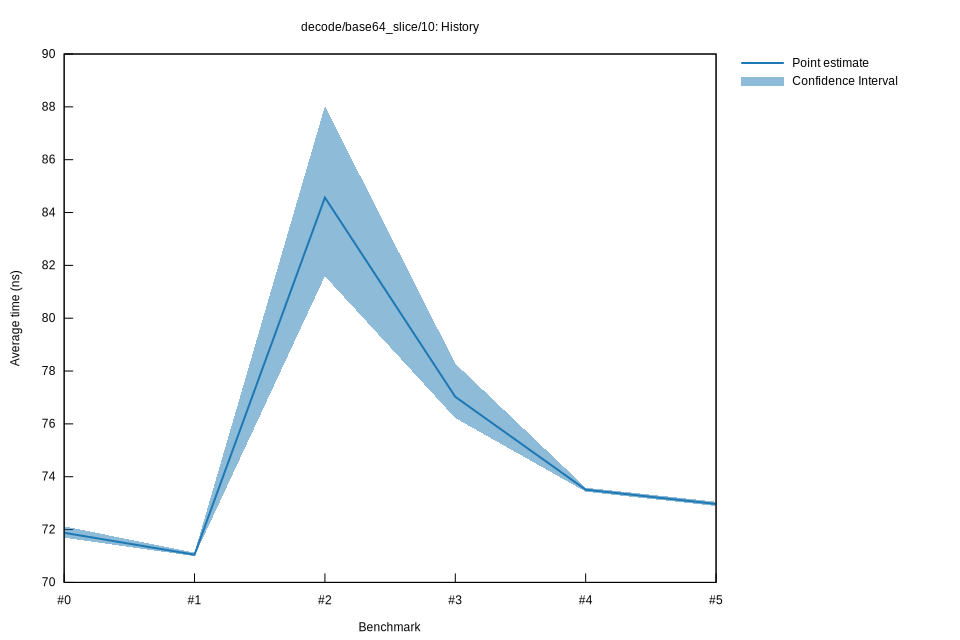

# 52022-10-16T20:17:22+03:00
|
Lower Bound |
Estimate |
Upper Bound |
| Value: |
72.89ns |
72.97ns |
73.05ns |
| Throughput: |
209.34MiB/s |
209.12MiB/s |
208.87MiB/s |
| Change in Value: |
-1.5267% |
-0.5088% |
+0.8269% |
| Change in Throughput: |
+1.5504% |
+0.5114% |
-0.8202% |
Change within noise threshold.
# 42022-10-16T17:34:50+03:00
|
Lower Bound |
Estimate |
Upper Bound |
| Value: |
73.43ns |
73.51ns |
73.59ns |
| Throughput: |
207.79MiB/s |
207.58MiB/s |
207.36MiB/s |
| Change in Value: |
-5.0950% |
-3.9551% |
-3.0101% |
| Change in Throughput: |
+5.3685% |
+4.1180% |
+3.1036% |
No change in performance detected.
# 32022-10-15T17:24:00+03:00
|
Lower Bound |
Estimate |
Upper Bound |
| Value: |
76.22ns |
77.02ns |
78.28ns |
| Throughput: |
200.19MiB/s |
198.11MiB/s |
194.93MiB/s |
| Change in Value: |
-9.7890% |
-7.4111% |
-5.1571% |
| Change in Throughput: |
+10.851% |
+8.0043% |
+5.4375% |
No change in performance detected.
# 22022-10-15T16:57:57+03:00
|
Lower Bound |
Estimate |
Upper Bound |
| Value: |
81.59ns |
84.57ns |
88.03ns |
| Throughput: |
187.02MiB/s |
180.44MiB/s |
173.35MiB/s |
| Change in Value: |
+14.662% |
+16.998% |
+20.268% |
| Change in Throughput: |
-12.787% |
-14.528% |
-16.852% |
No change in performance detected.
# 12022-10-08T17:33:22+03:00
|
Lower Bound |
Estimate |
Upper Bound |
| Value: |
70.99ns |
71.05ns |
71.13ns |
| Throughput: |
214.93MiB/s |
214.77MiB/s |
214.53MiB/s |
| Change in Value: |
-1.4271% |
-1.1417% |
-0.9005% |
| Change in Throughput: |
+1.4478% |
+1.1549% |
+0.9086% |
No change in performance detected.
# 02022-10-08T17:13:51+03:00
|
Lower Bound |
Estimate |
Upper Bound |
| Value: |
71.69ns |
71.88ns |
72.12ns |
| Throughput: |
212.84MiB/s |
212.29MiB/s |
211.57MiB/s |